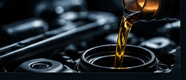

УХОД И НАДЁЖНОСТЬ
Плановое техническое обслуживание
Регулярное техническое обслуживание помогает обнаруживать износ и снижать риск неожиданных поломок.
Общий принцип
Сверяй интервал обслуживания с инструкцией производителя, пробегом, возрастом и условиями эксплуатации.